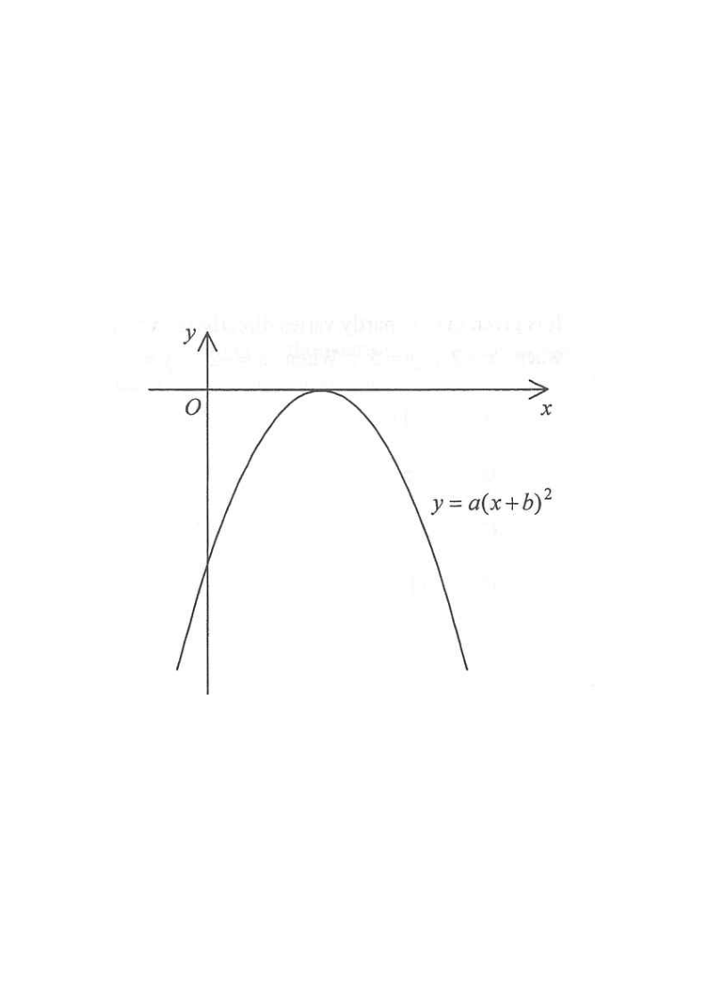

Drag the slider to change $a$ and $b$ — see how the curve behaves.
Interactive graph of $y=a\,b^{x}$.
The figure shows the graph of $y=a\,b^{\,x}$, where $a$ and $b$ are constants.
Which of the following is true?

Put $x=0$: $\;y=a\,b^{0}=a(1)=a$.
So the graph cuts the $y$-axis at $(0,\;a)$ — the constant $a$ is exactly the $y$-intercept.
Hint: the curve is entirely below the $x$-axis, so its $y$-intercept is negative.
The curve lies below the $x$-axis everywhere, and it crosses the $y$-axis at a negative value.
Hence $(0,a)$ is below the origin, i.e. $\;a<0$.
Hint: every $y$-value on the drawn curve is negative, and the curve is continuous, so the intercept must be negative.
For $y=a\,b^{x}$ to be a real valued graph defined for all real $x$ (a smooth curve drawn for every $x$), we need $b>0$.
If $b<0$, then $b^{x}$ is undefined for non-integer $x$ (e.g. $b^{1/2}$), so no continuous curve over the whole $x$-axis could be drawn.
Hint: the drawn graph is smooth for negative $x$ too — that rules out $b<0$.
Here $a<0$ and $b>1$: as $x\to+\infty$, $\;b^{x}\to\infty$ so $a\,b^{x}\to-\infty$ ✓ (curve falls steeply).
As $x\to-\infty$, $\;b^{x}\to 0$ so $a\,b^{x}\to 0^{-}$ ✓ (curve approaches the $x$-axis from below).
Hint: this matches the figure — steep going down on the right, flattening to the $x$-axis on the left.
We obtained $\;a<0\;$ and $\;b>0$.
Hint: $b$ is a base of an exponential function, hence positive by definition.
Question. The graph of \(y=ab^{x}\), where \(a\neq 0\) and \(b>0\), passes through \((0,-4)\) and \((2,-36)\). Find \(a\) and \(b\), and state whether the curve lies above or below the \(x\)-axis.